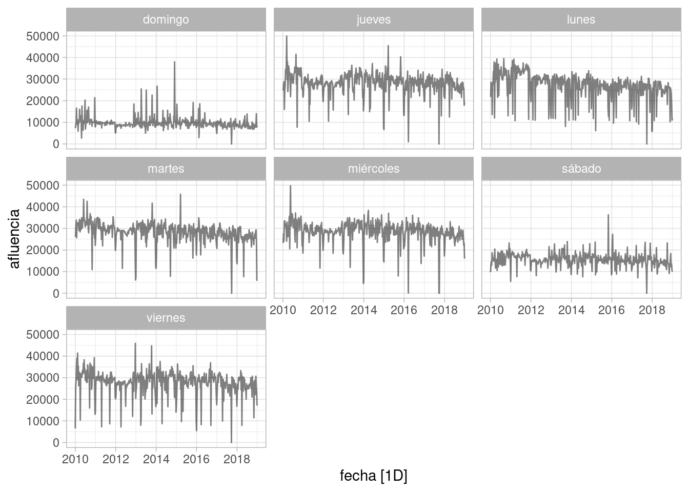
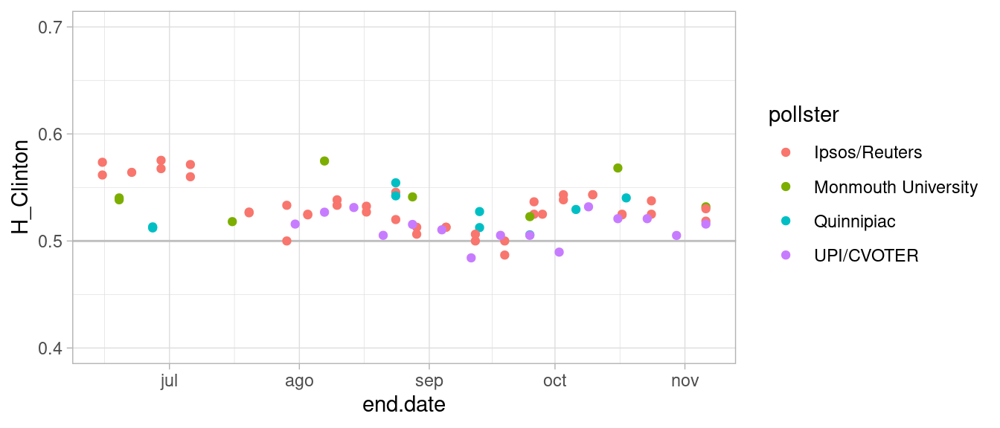
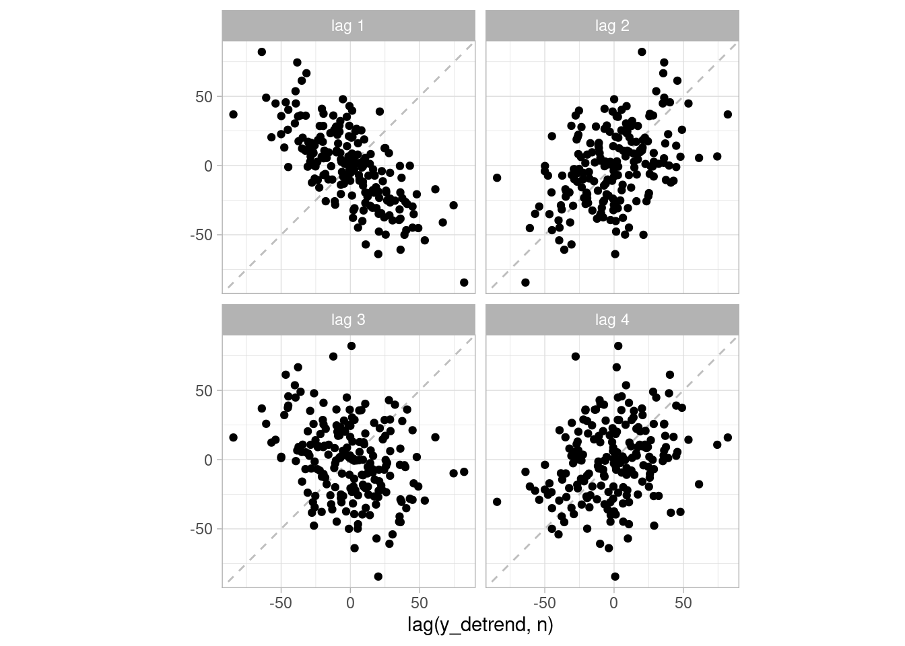
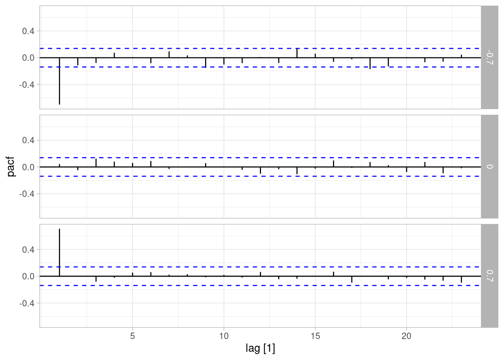

Código
library(tidyverse)
library(kableExtra)
library(DiagrammeR)
locale <- Sys.setlocale("LC_TIME", "es_ES.UTF-8")
library(lubridate)
library(fpp3)
ggplot2::theme_set(ggplot2::theme_light())library(tidyverse)
library(kableExtra)
library(DiagrammeR)
locale <- Sys.setlocale("LC_TIME", "es_ES.UTF-8")
library(lubridate)
library(fpp3)
ggplot2::theme_set(ggplot2::theme_light())Las series de tiempo son datos ordenados o secuenciales, donde acciones o estados en el pasado influyen de manera causal en sus valores futuros. Por esta razón, son datos que naturalmente pueden tener una estructura compleja de autocorrelación, de modo que no podemos tomarlos como observaciones independientes. Es crucial modelar de alguna forma las fuentes de esas autocorrelación.
En el análisis de series de tiempo, existen dos tareas principales que nos interesa:
Aunque estas dos tareas se pueden plantear independientemente, generalmente la primera tarea es importante para ejecutar de mejor manera la segunda.
Antes de comenzar a modelar estructura de series, mostramos los patrones que tienden a aparecer en diversas series
Abajo mostramos varios ejemplos estos patrones:
Primero veremos una serie larga donde la característica principal es su tendencia general y la presencia de ciclos:
autoplot(us_employment |> filter(Title == "Total Private"),
Employed) +
labs(subtitle = "Total empleo privado (millones)") + geom_point(size=0.1)Por ejemplo, examinemos la producción de energía eléctrica por mes en México:
energia <- read_csv("../datos/czpcimzhlu_IIIA1C01_12032023_21_29.csv",
na = c("N/D", "", "NA")) |>
pivot_longer(cols = contains("/20"),
names_to = "mes_año", values_to = "generacion") |>
mutate(fecha = yearmonth(my(mes_año))) |>
rename(estado = `...1`) |>
filter(!is.na(generacion)) |>
as_tsibble(key = estado, index = fecha)energia_total <- energia |> filter(estado=="TOTAL")
autoplot(energia_total, generacion) + geom_point() +
ylab("Generación (MWh)")En este ejemplo, vemos un patrón de estacionalidad fuerte de mayor generación de energía alrededor de la mitad del año:
gg_season(energia_total, generacion)También tiene una tendencia creciente al principio de 2010 que parece terminar en 2012, junto con un cambio de nivel considerable a principios de 2020.
Para este tipo de series de tiempo, es crucial hacer predicciones de corto plazo (un día, horas) y también puede ser útil hacer predicciones con horizontes más largos.
Consideramos datos de afluencia para estaciones del metro en la CDMX. Veremos una estación en particular:
metro_tbl <-
read_csv("../datos/metro-cmdx/afluenciastc_simple_11_2022.csv") |>
mutate(linea = str_replace(linea, "í", "i")) |>
mutate(dia_sem = weekdays(fecha)) |>
as_tsibble(index = fecha, key = c(estacion, linea)) Rows: 919815 Columns: 6
── Column specification ────────────────────────────────────────────────────────
Delimiter: ","
chr (3): mes, linea, estacion
dbl (2): anio, afluencia
date (1): fecha
ℹ Use `spec()` to retrieve the full column specification for this data.
ℹ Specify the column types or set `show_col_types = FALSE` to quiet this message.estacion_tbl <- metro_tbl |> filter(estacion == "Hospital General") |>
filter(year(fecha) <= 2018) autoplot(estacion_tbl, afluencia, alpha = 0.5) +
facet_wrap(~ dia_sem)
En este caso vemos un tendencia descendiente, con algunas oscilaciones que ocurren a lo largo de varios años. Hay algunos días que parecen tener cierres (probablemente deberíamos considerar estos datos como faltantes) y también picos de uso interesantes.
Existe un patrón de estacionalidad que en la siguiente gráfica anual: principalmente vemos menos afluencia a principios y finales de año:
estacion_tbl |> gg_season(afluencia, alpha = 0.5) 
Hay otros patrones periódicos que podemos examinar, por ejemplo el patrón semanal:
estacion_tbl |> gg_season(afluencia, period = "week", alpha = 0.2)Es común tratar con series irregulares, por ejemplo cuando consideramos datos de sensores. En este caso, vemos la serie de tiempo del nivel de una cisterna de cerca de 9 mil litros:
cisterna_tbl <- read_csv("../datos/sensor-cisterna.csv") |>
mutate(fecha_hora = as_datetime(last_updated_ts)) |>
mutate(fecha = as_date(fecha_hora)) |>
as_tsibble(index = fecha_hora, regular=FALSE)ggplot(cisterna_tbl |>
filter(fecha < ymd("2023-03-01"), fecha > ymd("2023-02-19")),
aes(x = fecha_hora, y = state)) + geom_line() +
geom_point() + ylab("Litros")Además de patrones de uso y entrega de agua, observamos el hecho de que los sensores son ruidosos. Una tarea útil en estos casos es filtrar las observaciones ruidosas, por ejemplo para tener datos confiables para utilizar en automatización.
Otro ejemplo adicional que consideraremos son observaciones irregulares con mediciones heterogéneas (algunas contemporáneas), por ejemplo, cuando consideramos el problema de utilizar encuestas para predecir resultados de elecciones. En este caso vemos datos para 2016, extraídos de TheEconomist us-potus-model
# https://github.com/TheEconomist/us-potus-model/tree/master/data
gelman_tbl <- read_csv("../datos/all_polls_gelman.csv")polls_tbl <- gelman_tbl |>
mutate(undecided = ifelse(is.na(undecided), 0, undecided)) |>
mutate(oter = ifelse(is.na(other), 0, other)) |>
mutate(H_Clinton = clinton/(clinton + trump),
D_Trump = 1 - H_Clinton) |>
filter(population %in% c("Likely Voters", "Registered Voters"),
end.date > "2016-06-10",
pollster %in% c("Ipsos/Reuters", "Quinnipiac",
"Monmouth University", "SurveyMonkey", "UPI/CVOTER"),
state == "--")ggplot(polls_tbl, aes(x = end.date, y = H_Clinton, colour = pollster)) +
geom_hline(yintercept = 0.5, colour = "gray") +
geom_point() + ylim(c(0.4,0.7)) 
En escalas más cortas, también podemos encontrar patrones de asociación más allá de las que produce la tendencia, ciclos y estacionalidad, y que son importantes para entender la serie.
En primer lugar, consideramos datos simulados:
generar_obs <- function(n = 200, phi = 0.5, a = 100, sigma = 5, nu = NULL){
y <- numeric(n)
e <- numeric(n)
tendencia <- numeric(n)
tendencia[1] <- rnorm(1, a, 0.2 * a)
if(is.null(nu)){
nu <- rnorm(n, 0, 10)
}
epsilon <- rnorm(n, 0, 20)
for(i in 2:n){
e[i] <- phi * e[i - 1] + epsilon[i]
tendencia[i] <- tendencia[i - 1] + nu[i]
}
y <- tendencia + e
tibble(t = 1:n, y = y, phi = phi, y_detrend = e)
}
set.seed(82)
nu <- rnorm(200, 0, 10)
serie_1 <- generar_obs(phi = -0.7, nu = nu )
serie_2 <- generar_obs(phi = 0.0, nu = nu )
serie_3 <- generar_obs(phi = 0.7, nu = nu )
series_tbl <- bind_rows(list(serie_1, serie_2, serie_3)) |>
as_tsibble(index = t, key = phi)ggplot(series_tbl, aes(x = t, y = y)) +
geom_line() +
facet_wrap(~ phi, ncol = 1) +
geom_smooth(se = FALSE, span = 0.5)`geom_smooth()` using method = 'loess' and formula = 'y ~ x'Estas tres series, aunque tienen una tendencia similar, tienen un patrón de variación distinto en el corto plazo:
Para confirmar nuestra observación, podemos hacer una gráfica de rezagos para las series sin tendencia (es decir, restamos la tendencia de la gráfica anterior a los datos):
gg_lag(series_tbl |> filter(phi == -0.7),
y_detrend, lags = 1:4, geom = "point") + ylab("")
gg_lag(series_tbl |> filter(phi == 0.7),
y_detrend, lags = 1:4, geom = "point") 
Y podemos resumir estas gráficas calculando un resumen de asociación, usualmente la correlacción en cada de una de estas gráficas (es decir, una serie contra la misma serie rezagada en \(h\) tiempos):
La función de autocorrelación para rezagos \(h=1,2,\ldots\) está dada por
\[\textrm{ACF(h)} = \rho(h) = \textrm{cor}(y_t, y_{t-h})\]
Para el ejemplo de arriba, tenemos
acf_tbl <- series_tbl |> ACF(y_detrend)
acf_tbl |> head()# A tsibble: 6 x 3 [1]
# Key: phi [1]
phi lag acf
<dbl> <cf_lag> <dbl>
1 -0.7 1 -0.699
2 -0.7 2 0.430
3 -0.7 3 -0.294
4 -0.7 4 0.248
5 -0.7 5 -0.202
6 -0.7 6 0.111autoplot(acf_tbl)
Nota 1: dado que la ACF se estima con una muestra, tiene error. Las líneas punteadas que generalmente la acompañan son intervalos de 95% para la autocorrelación bajo la hipótesis de que los valores de la serie no tienen correlación.
Este resumen coincide con nuestra descripción de arriba: la primera serie oscila “sobre-corrigiendo”, la segunda serie oscila de manera más suave alrededor de la tendencia. En la intermedia vemos que las estimaciones están generalmente dentro de la banda señalada por las líneas punteadas.
En general, cuando calculamos la ACF de una serie con tendencia-ciclo y estacionalidad fuertes, esos son los aspectos que tienden a dominar la gráfica.
Consideremos por ejemplo la siguiente serie de nacimientos por día en México:
natalidad_tbl <- read_rds("../datos/natalidad.rds") |>
ungroup() |>
arrange(fecha) |>
filter(fecha > ymd("2000-01-01")) |>
rename(nacimientos = n) |>
as_tsibble(index = fecha)La serie completa se ve como sigue:
autoplot(natalidad_tbl, alpha = 0.8)Plot variable not specified, automatically selected `.vars = nacimientos`Ahora consideramos la función de autocorrelacción, que tiene un pico negativo en el primer rezago:
ACF(natalidad_tbl, nacimientos, lag_max = 60) |> autoplot()Esta ACF captura tanto la tendencia-ciclo (todas las correlaciones son positivas), como la estacionalidad (picos en múltiplos de 7 días). Podemos ver esta relación graficando directamente la serie contra sus rezagos:
gg_lag(natalidad_tbl, nacimientos, geom = "point", size = 1, alpha = 0.6) Veremos más adelante técnicas para extraer tendencia, ciclo y estacionalidad de series. En este caso utilizaremos el metodo loess para examinar qué sucede con la variación adicional que podemos explicar con tendencia y estacionalidad anual y semanal:
descomp_nat <- natalidad_tbl |>
model(
STL(nacimientos ~ trend(window = 101) +
season(period = "1 year", window = 7) +
season(period = "week", window =15),
robust = TRUE)) |>
components() ggplot(descomp_nat, aes(x = fecha, y = remainder)) +
geom_line()Como vemos, esta serie no tiene una tendencia o estacionalidad claras, pues las hemos extraido con el proceso de arriba. Sin embargo, tiene una estructura de correlación:
descomp_nat |> as_tsibble(index = fecha) |>
ACF(remainder) |>
autoplot() + ylim(c(-0.2,0.2))Notamos que, aunque las autocorrelaciones son mucho más chicas, todavía existe una correlación positiva en rezago 1 y 2.
Por otro lado, si se tratara de una serie donde las observaciones no tienen ninguna correlación, observaríamos:
descomp_nat <- mutate(descomp_nat,
remainder_perm = sample(remainder))
ggplot(descomp_nat, aes(x = fecha, y = remainder_perm)) +
geom_line()Con ACF como sigue:
descomp_nat |> as_tsibble(index = fecha) |>
ACF(remainder_perm) |>
autoplot() + ylim(c(-0.2,0.2))Consideramos \(y_1,y_2,\ldots, y_T\) observaciones de una serie de tiempo, donde el subíndice indica el momento donde se tomó cada observación. Un modelo que podemos considerar es el siguiente:
grViz('
digraph {
graph [ranksep = 0.2]
node [shape=plaintext]
Y1 [label = <Y<SUB>1</SUB>>]
dots [label = "..."]
Ytm1 [label = <Y<SUB>t-1</SUB>>]
Yt [label = <Y<SUB>t</SUB>>]
Yt1 [label = <Y<SUB>t+1</SUB>>]
Yt2 [label = <Y<SUB>t+2</SUB>>]
etm1 [label = <e<SUB>t-1</SUB>>]
et [label = <e<SUB>t</SUB>>]
et1 [label = <e<SUB>t+1</SUB>>]
et2 [label = <e<SUB>t+2</SUB>>]
edge [minlen = 3]
Y1 -> dots
dots -> Ytm1
Ytm1 -> Yt
Yt -> Yt1
Yt1 -> Yt2
e1 -> Y1
etm1 -> Ytm1
et -> Yt
et1 -> Yt1
et2 -> Yt2
{rank=same; Y1; dots; Ytm1; Yt; Yt1; Yt2}
}
', width = 200, height = 40)En este modelo suponemos que dado \(Y_{t}\), \(Y_{t+1}\) es condicionalmente independiente de cualquier otra \(Y\) anterior a \(t\). La conjunta \(p(y_1,y_2,\ldots, y_T)\) se escribe como
\[p(y_1)p(y_2|y_1)\cdots p(y_{T-1}|y_{T-2}) p(y_T | y_{T-1})\] Y podemos definir un modelo para cada \(p(y_t|y_{t-1})\). En modelos estáticos, generalmente se define una relación que depende de parámetros fijos, por ejemplo, un modelo autoregresivo de orden 1 AR(1) con errores normales es:
\[y_t = \alpha_0 + \alpha_1 y_{t-1} + \epsilon_t\] donde \(\epsilon_t\sim N(0,\sigma)\) son independientes. En este caso, la relación probabilística de entre las observaciones es fija en cualquier tiempo. Podemos estimar \(\alpha_1\), que se puede escribir en términos de la correlación entre \(y_t\) y \(y_{t-1}\), y podemos interpretar como el efecto directo de \(y_{t-1}\) sobre \(y_t\).
Cuando consideramos la correlación entre \(y_{t-2}\) y \(y_t\), sustituyendo en le ecuación anterior podemos ver que también se trata de un modelo lineal. Podemos estimar el coeficiente de \(y_{t-2}\) (que es \(\alpha_1^2\)). En este caso, obtenemos esta correlación por el efecto mediado por \(y_{t-1}\), como en el ejemplo anterior de las tres series que vimos arriba.
En este caso, la ACF muestra correlaciones totales (efecto total). Podríamos también preguntarnos por correlaciones parciales, que es la correlación entre \(y_t\) y \(y_{t-2}\) condicionando a \(y_{t-1}\). En este caso nos interesa el efecto directo de \(y_{t-2}\) sobre \(y_t\), controlando por \(y_{t-1}\).
Podemos definir la función de autocorrelación parcial PACF como las correlaciones entre \(y_t\) y \(y_{t-h}\) condicionadas a los valores intermedios \(y_{t-1},\ldots, y_{t-h}\): es decir, es la correlación directa, bloqueando la correlación que ocurre a través de otros nodos de la gráfica
En nuestro ejemplo anterior, encontramos que
series_tbl |> ACF(y_detrend) |>
autoplot()Sin embargo, las autocorrelaciones parciales dan:
series_tbl |> PACF(y_detrend) |>
autoplot()
Y vemos que el coeficiente del primer rezago es igual que el de la ACF (no condicionamos a nada), pero una vez que condicionamos a rezagos intermedios, las correlaciones parciales son 0. De esta manera identificamos que el modelo subyacente es autoregresivo de orden 1.
Podemos también considerar otras estructuras para modelar, como
grViz('
digraph {
graph [ranksep = 0.2]
node [shape=plaintext]
Y1 [label = <Y<SUB>1</SUB>>]
dots [label = "..."]
Ytm1 [label = <Y<SUB>t-1</SUB>>]
Yt [label = <Y<SUB>t</SUB>>]
Yt1 [label = <Y<SUB>t+1</SUB>>]
Yt2 [label = <Y<SUB>t+2</SUB>>]
aa [label = ""]
etm1 [label = <e<SUB>t-1</SUB>>]
et [label = <e<SUB>t</SUB>>]
et1 [label = <e<SUB>t+1</SUB>>]
et2 [label = <e<SUB>t+2</SUB>>]
edge [minlen = 3]
Y1 -> dots
dots -> Ytm1
Ytm1 -> Yt
Ytm1 -> Yt1
Yt -> Yt1
Yt -> Yt2
Yt1 -> Yt2
aa -> Ytm1
e1 -> Y1
etm1 -> Ytm1
et -> Yt
et1 -> Yt1
et2 -> Yt2
{rank=same; Y1; dots; Ytm1; Yt; Yt1; Yt2;aa}
}
', width = 200, height = 40)En este caso, el modelo generador es de la forma
\[y_t = \alpha_0 + \alpha_1 y_{t-1} + \alpha_2 y_{t-2} + \epsilon_t\] donde \(\epsilon_t\sim N(0,\sigma)\) son independientes. Abajo simulamos de estos modelos:
generar_obs_2 <- function(n = 200, phi = c(0.5, 0.2),
a = 100, sigma = 5, nu = NULL){
y <- numeric(n)
e <- numeric(n)
tendencia <- numeric(n)
tendencia[1] <- rnorm(1, a, 0.2 * a)
if(is.null(nu)){
nu <- rnorm(n, 0, 10)
}
epsilon <- rnorm(n, 0, 20)
for(i in 2:n){
tendencia[i] <- tendencia[i - 1] + nu[i]
}
for(i in 3:n){
e[i] <- phi[1] * e[i - 1] + phi[2] * e[i - 2] + epsilon[i]
}
y <- tendencia + e
tibble(t = 1:n, y = y, phi = paste(phi, collapse = ","), y_detrend = e)
}
set.seed(82)
nu <- rnorm(200, 0, 10)
serie_1 <- generar_obs_2(phi = c(-0.3, 0.5), nu = nu )
serie_2 <- generar_obs_2(phi = c(0.0, 0.0), nu = nu )
serie_3 <- generar_obs_2(phi = c(0.3, 0.5), nu = nu )
series_2_tbl <- bind_rows(list(serie_1, serie_2, serie_3)) |>
as_tsibble(index = t, key = phi)series_2_tbl |> ACF(y_detrend) |>
autoplot()Sin embargo, las autocorrelaciones parciales dan:
series_2_tbl |> PACF(y_detrend) |>
autoplot()Y estas gráficas son típicas para un proceso AR(2) como el que simulamos.
En este curso no nos concentramos en modelos ARIMA, pues no son muy apropiados para nuestra primera tarea de entender la estructura de series de tiempo, pero son modelos que pueden dar buenos resultados en pronósticos. Puedes leer más en nuestra referencia Forecasting: Principles and Practice.